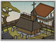
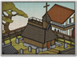

Requires
- Arts:

Enables
- Buildings:
 

- Arts:

Effects
- -20% cost for monk actions
- -20% cost for missionary actions
- -10% cost for Ikko monk actions
Description
It requires a strong spirit and exceptional patience to become a monk. It also requires an able, educated mind to grapple with deep theological questions. A devotee of Buddha will gain wisdom and understanding of the world. The path to harmony through abandoning desire is not easy, for the desire for harmony is a desire in itself. It is not a path for the faint of heart. Education and understanding are worthwhile, though, as they increase the abilities of all monks and make it more likely that they will succeed in their given tasks.
Religion in feudal Japan was a mixture of the indigenous Shinto faith, and also Buddhism, Confucianism and Christianity from overseas. Like much else, Buddhism arrived from China but was only widely adopted when the warrior class took control of the country. It was the main religion of the Sengoku Jidai, although Christianity arrived when trade with the Portuguese began; the disciplined Jesuit "warrior missionaries" were actually rather appealing to the samurai. Under the Tokugawa Shogunate, however, Christianity was banned as a foreign influence. The Tokugawas then introduced neo-Confucianism as the official religion of the state: a combination of the practicality of Confucius with the spiritual and ethereal nature of Buddhism.